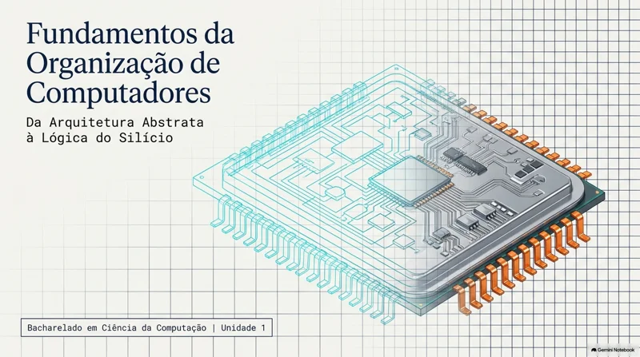
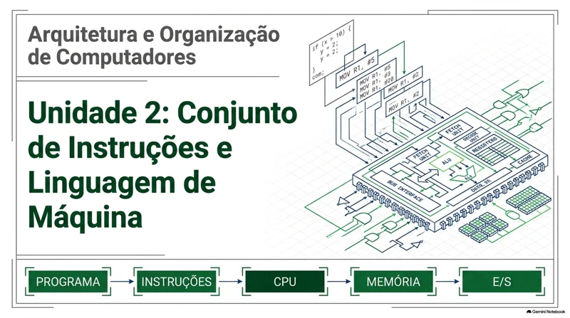
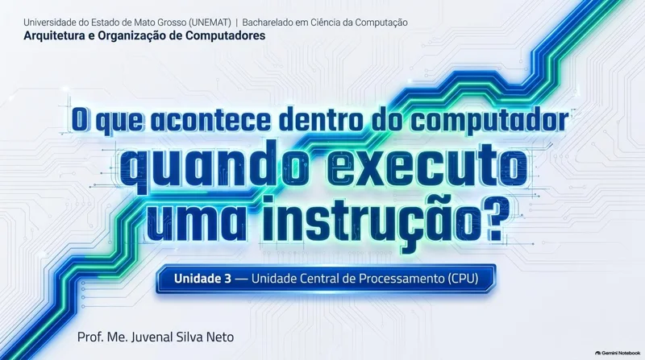
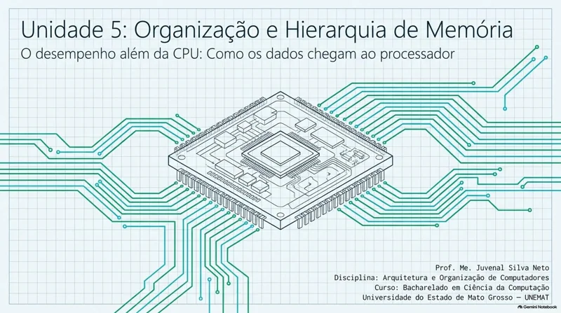
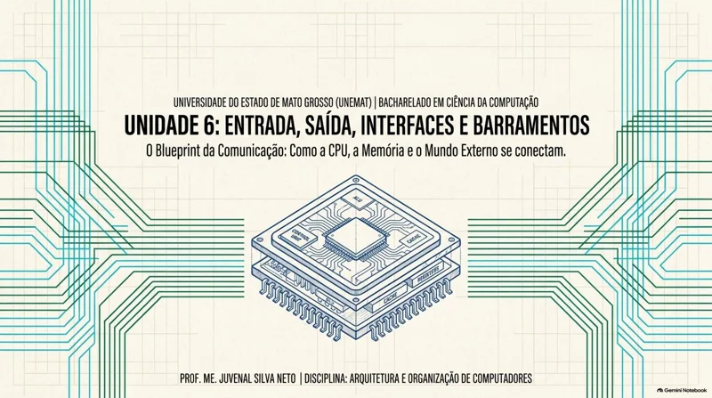
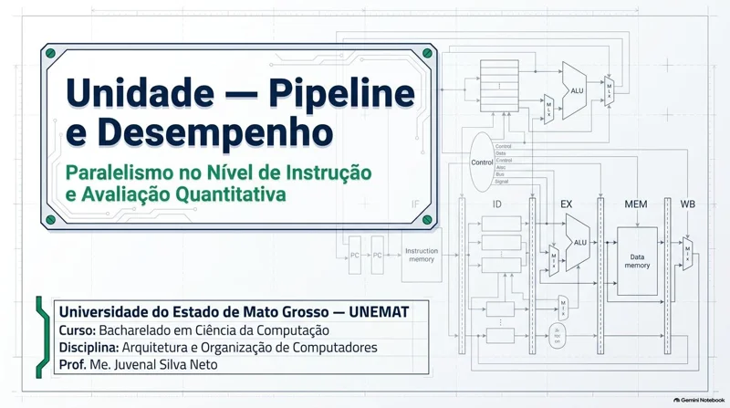
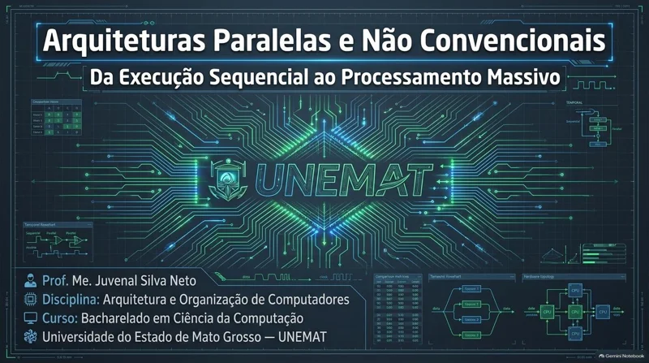

BACHARELADO EM CIÊNCIA DA COMPUTAÇÃO
Arquitetura e
Organização de
Computadores.
Entenda como as instruções
se transformam em execução.
Os materiais teóricos da disciplina, organizados em um percurso de estudo: da representação da informação às arquiteturas paralelas.
Buscar. Decodificar. Executar.
Seu material, sempre à mão. Abra os PDFs em uma nova aba ou baixe os arquivos para estudar offline.
Fundamentos da organização de computadores
Do software aos circuitos.
Explore a diferença entre arquitetura e organização, os níveis de abstração e os componentes de um computador. Conheça a representação da informação e a lógica que sustenta o funcionamento da máquina.
- Arquitetura e organização
- Representação da informação
- Lógica digital

Materiais para estudo Na sequência das aulas
Fundamentos: da arquitetura à lógica
Uma visão dos componentes, da representação de dados e dos fundamentos lógicos.
Conjunto de instruções e Assembly
A linguagem que o processador entende.
Acompanhe a passagem dos programas para as instruções da máquina. Estude ISA, operandos e endereçamento, conheça a linguagem Assembly e compare as propostas CISC e RISC.
- ISA e instruções
- Assembly
- CISC e RISC

Materiais para estudo Na sequência das aulas
Conjunto de instruções e linguagem de máquina
Instruções, operandos, formatos e modos de endereçamento.
Fundamentos da linguagem Assembly
A relação entre instruções simbólicas, registradores e código de máquina.
CISC × RISC
Diferentes escolhas para organizar o conjunto de instruções.
Unidade Central de Processamento
Por dentro da CPU.
Entenda como registradores, unidade de controle e ULA cooperam na execução de um programa. Acompanhe o ciclo de busca, decodificação e execução e o caminho percorrido pelos dados.
- Registradores e ULA
- Ciclo de instrução
- Caminho de dados

Materiais para estudo Na sequência das aulas
Dentro da CPU
Estrutura do processador e etapas de execução das instruções.
Hierarquia de memória
Dados no lugar certo, no tempo certo.
Investigue como os diferentes níveis de memória equilibram capacidade, custo e velocidade. Relacione registradores, cache e memória principal aos princípios de localidade e ao desempenho dos programas.
- Cache e RAM
- Localidade
- Hierarquia de memória

Materiais para estudo Na sequência das aulas
Hierarquia de memória
Organização dos níveis de memória e seu impacto no desempenho.
Entrada, saída e barramentos
O computador em conexão.
Conheça a comunicação entre CPU, memória e periféricos. Estude interfaces, controladores e barramentos e os mecanismos de transferência de dados entre os componentes do sistema.
- Interfaces e controladores
- Barramentos
- Comunicação com periféricos

Materiais para estudo Na sequência das aulas
Entrada/saída, interfaces e barramentos
Como os dispositivos trocam dados com o restante do computador.
Pipeline e análise de desempenho
Mais instruções em movimento.
Compare a execução sequencial com a sobreposição de etapas no pipeline. Examine dependências e conflitos e use métricas de desempenho para compreender os ganhos e limites dessa organização.
- Estágios do pipeline
- Hazards
- Métricas de desempenho

Materiais para estudo Na sequência das aulas
Pipeline e análise de desempenho
Sobreposição da execução, conflitos e avaliação de desempenho.
Arquiteturas paralelas e não convencionais
Além de um único fluxo de execução.
Amplie a visão do computador para múltiplas unidades de processamento. Explore paralelismo, processadores multicore e arquiteturas que adotam diferentes formas de organizar a computação.
- Paralelismo
- Multicore e GPU
- Arquiteturas não convencionais

Materiais para estudo Na sequência das aulas
Arquiteturas paralelas e não convencionais
Diferentes organizações para executar e distribuir o processamento.
CONTINUE O ESTUDO
Outra forma de
acompanhar o conteúdo.
Retome os conceitos com as explicações em vídeo da disciplina. Acesse a playlist completa no YouTube e escolha o tema que deseja revisar.
Acessar playlist no YouTube (nova aba)DA TEORIA À PRÁTICA
Experimente os conceitos.
Continue com as atividades de Arquitetura e Organização de Computadores disponíveis no portal.